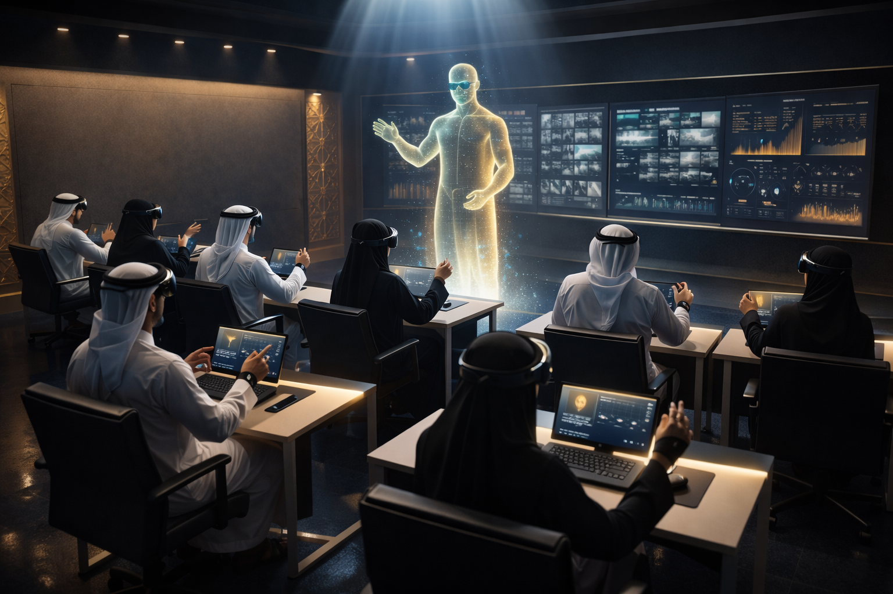

Confidential Documentوثيقة سرية
Authorized Personnel Onlyللأشخاص المصرّح لهم فقط
Authorized Personnel Onlyللأشخاص المصرّح لهم فقط
Your system already generates world-class session reports. Now turn them into capability intelligence. منظومتكم تُنتج اليوم تقارير تدريب بمستوى عالميّ. الخطوة التالية: تحويلها إلى ذكاء يقيس القدرة الحقيقية.
On-premises. Air-gapped. Biometric-integrated. Built to your surveillance standards across all 4 coverage levels. مُثبّتة داخل المركز، معزولة عن الشبكات الخارجية، ومُتكاملة مع القياسات الحيوية — مبنيّة وفق معاييركم لمستويات التغطية الأربعة جميعها.

200 operators. 3 shifts. 5 sites. Your AI report tells you what happened to one operator in one session. But your organization needs answers to these. ٢٠٠ مشغّل، وثلاث ورديات، وخمسة مواقع. التقرير الذكيّ يخبركم بما حدث لمشغّل واحد في جلسة واحدة، بينما تحتاج المؤسّسة إجابات تتجاوز الجلسة الواحدة.
Two operators both score 47. One has tunnel vision that training can fix in 4 sessions. The other has a decision-making weakness that takes months. A score treats them as equal. مشغّلان يحصلان على 47. أحدهما لديه ضيق أفق نظر يُعالَج في أربع جلسات. والآخر لديه ضعف في صنع القرار يستغرق أشهراً. الدرجة تعاملهما على السواء.
Capability measurement knows they are fundamentally different. قياس القدرة يعلم أنهما مختلفان جوهرياً.
Your system already collects the data. CAPS organizes it into what matters. البيانات تُجمع اليوم في منظومتكم. دور «قياس القدرات» أن يُنظّمها حول ما يهمّ فعلاً.
From your data:من بياناتكم: Eye tracking, gaze distribution, camera switching patternsتتبّع العين، توزيع النظر، أنماط التنقّل بين الكاميرات
From your data:من بياناتكم: Alarm handling, marking precision, response timingالتعامل مع الإنذارات، دقة الوسم، توقيت الاستجابة
From your data:من بياناتكم: Reaction speed, false positive rate, biometrics at decision pointsسرعة الاستجابة، نسبة الإنذار الكاذب، القياسات الحيوية عند لحظة القرار
From your data:من بياناتكم: Post-error performance, recovery time, biometric stabilizationالأداء بعد الخطأ، زمن التعافي، استقرار المؤشرات الحيوية
Every number from Hessa's report maps to a capability dimension. Her system collected it. CAPS interprets it. كلّ رقم في تقرير حصّة يرتبط ببُعد من أبعاد القدرة. المنظومة جمعت الأرقام؛ ومنظومة قياس القدرات هي التي تُفسّرها.
Your surveillance framework defines 4 coverage levels. We measure whether your operators actually deliver them under pressure. إطار المراقبة لديكم يُحدّد أربعة مستويات للتغطية. نحن نقيس ما إذا كان المشغّلون يُحقّقونها فعلاً في لحظات الضغط.

Entrances, exits, control rooms. CAPS validates whether the operator's attention meets this standard when it matters most.المداخل والمخارج وغرف التحكّم. يُثبت إطار القدرات أن انتباه المشغّل يطابق هذا المعيار في اللحظات الحاسمة.
Lobbies, cash areas, corridors. Sustained attention across multiple feeds at recognition-grade density.الردهات ومناطق النقد والممرّات. انتباه مستدام عبر مصادر متعدّدة بكثافة تمييزية.
Perimeters, parking, landscape. The minimum standard. Below this under stress, operators are functionally blind.المحيطات ومواقف السيارات والمناظر الخارجية. المعيار الأدنى. تحت هذا الحدّ في ظروف الضغط، يصبح المشغّل أعمى وظيفياً.
Vehicle entrances and exits. Split-second identification under time pressure at access points.مداخل ومخارج المركبات. تعرّف في أجزاء من الثانية تحت ضغط الوقت عند نقاط الدخول.
Abu Dhabi's Falcon Eye surveillance ecosystem delivers unified situational awareness across the emirate's public and private infrastructure. CAPS is the missing human-capability layer: Falcon Eye measures what the cameras see; CAPS measures whether the operators watching them are ready to act. Together they close the loop between sensor intelligence and operator intelligence. Manual of Standards v2.0 compliance is the shared language. منظومة عيون الصقر في أبوظبي تُوفّر وعياً موقفيّاً موحّداً يمتدّ على البنية التحتيّة العامّة والخاصّة في الإمارة. ومنظومة قياس القدرات هي الطبقة الإنسانيّة المكمّلة: عيون الصقر تقرأ ما تراه الكاميرات، بينما تقرأ منظومة قياس القدرات استعداد المشغّلين للتصرّف عند الحاجة. معاً تُغلقان الحلقة بين ذكاء المستشعرات وذكاء العنصر البشريّ، والامتثال للإصدار الثاني من دليل المعايير هو لغتهما المشتركة.
A grounded conversational model — trained on the CAPS framework, the Manual of Standards v2.0, and Hessa's full session telemetry. It doesn't just summarise. It reasons, cross-references, and explains — the way a senior human-factors analyst would. نموذج حواريّ مُؤسَّس على منظومة قياس القدرات، ودليل المعايير في إصداره الثاني، وبيانات جلسة حصّة الكاملة. لا يكتفي بتلخيص الأرقام؛ بل يُحلّل، ويربط بين المصادر، ويُفسّر كما يفعل محلّل العوامل البشريّة المتمرّس.
Every scenario maps to a mandatory category in the MCC Manual of Standards for Surveillance Devices v2.0 (2023). These are the entity classes your operators are legally required to monitor. كلّ سيناريو يقابل فئة إلزامية من دليل أجهزة المتابعة والتحكّم — الإصدار الثاني (٢٠٢٣). هذه هي فئات المنشآت التي يُلزَم مشغّلوكم بمراقبتها قانونيّاً.

The UAE national rail network is entering passenger operations. High-speed intercity transit, long platforms, mixed freight corridors. An entirely new surveillance environment.شبكة السكك الحديدية الوطنية تدخل مرحلة تشغيل الركّاب. نقل عالي السرعة، أرصفة طويلة، ممرّات شحن مختلطة — بيئة مراقبة جديدة كلّياً.
Unattended luggage on the platform. Track-level intrusion at bridges. Coordinated distraction theft. Unauthorized access to staff-only platforms.حقائب مهملة على الرصيف. تسلّل إلى منطقة السكّة عند الجسور. سرقة منظّمة بالإلهاء. دخول غير مصرّح لأرصفة الطاقم.
Etihad Rail is brand-new federal infrastructure. Operators will monitor it from day one with zero prior experience.الاتحاد للقطارات بنية اتحادية جديدة كلّياً، يراقبها المشغّلون من اليوم الأول دون خبرة سابقة.
 Passenger Platformرصيف الركّاب
Passenger Platformرصيف الركّاب Track Areaمنطقة السكّة
Track Areaمنطقة السكّة Station Concourseصالة المحطة
Station Concourseصالة المحطة
Multi-level, high-density transit. Escalator blind spots. Rush hour crowd surges. The hardest challenge in urban surveillance.نقل متعدّد المستويات عالي الكثافة. نقاط عمياء عند السلالم. اندفاعات الحشد في الذروة. أصعب تحدٍّ حضري.
Unattended bag. Pickpocket in rush hour. Individual jumping turnstiles toward track-level areas. Coordinated distraction near the ticket hall.حقيبة متروكة. نشّال في الذروة. قفز للبوابات نحو مناطق السكّة. إلهاء منظّم قرب صالة التذاكر.
Abu Dhabi Metro is launching. Operators will monitor CCTV from day one with zero experience in high-density vertical environments.مترو أبوظبي يُطلق قريباً. المشغّلون يراقبون كاميراته من اليوم الأول بلا خبرة في بيئات عمودية عالية الكثافة.
 Rush Hour Platformرصيف الذروة
Rush Hour Platformرصيف الذروة Escalator Corridorممرّ السلالم
Escalator Corridorممرّ السلالم Ticket Hallصالة التذاكر
Ticket Hallصالة التذاكر
Restricted zones, ambulance bays, pharmacy storage. Operators must balance security vigilance with patient privacy where a wrong call has legal and human consequences.مناطق مقيّدة، أحواض إسعاف، مخازن صيدلية. توازن بين اليقظة الأمنية وخصوصية المرضى في بيئة تترتّب فيها على القرار الخاطئ آثار قانونية وإنسانية.
Unauthorized pharmacy access. Aggressive individual in ER. Suspicious activity near ambulance bay drug cabinets. Tailgating into OR corridor.دخول غير مصرّح للصيدلية. شخص عدواني في الطوارئ. نشاط مشبوه قرب خزائن الأدوية. تسلّل لممرّ العمليات.
Healthcare is mandatory coverage. False alarms disrupt patient care; missed threats endanger lives.الرعاية الصحية تغطية إلزامية. الإنذارات الكاذبة تُعطّل الرعاية، والتهديدات الفائتة تُعرّض الحياة للخطر.
 Ambulance Bayحوض الإسعاف
Ambulance Bayحوض الإسعاف Pharmacy Storageمخزن الصيدلية
Pharmacy Storageمخزن الصيدلية Restricted Corridorممرّ مقيّد
Restricted Corridorممرّ مقيّد
Vault areas, ATM zones, cash counters. High-value environments where a single missed face can enable fraud worth millions.خزائن ومناطق صرّافات ومنصّات نقد. بيئات عالية القيمة قد يؤدّي فيها وجه فائت إلى احتيال بالملايين.
ATM skimming install in blind spot. After-hours movement near vault corridor. Coordinated distraction at counters. Loitering near deposit boxes.تركيب جهاز نسخ على صرّاف في نقطة عمياء. حركة بعد الدوام قرب الخزينة. إلهاء منظّم عند المنصّات. تسكّع قرب صناديق الإيداع.
Financial institutions require 180-day retention and mandatory Recognition coverage — the highest-stakes category.المؤسسات المالية تحتاج تخزيناً 180 يوماً وتغطية تمييز إلزامية — أعلى الفئات حساسية.
 ATM Zoneمنطقة الصرّاف
ATM Zoneمنطقة الصرّاف Vault Roomغرفة الخزينة
Vault Roomغرفة الخزينة Cash Counterمنصّة النقد
Cash Counterمنصّة النقد
The most complex multi-camera challenge. All 4 coverage levels active simultaneously across dozens of cameras.أعقد تحدٍّ متعدّد الكاميرات. المستويات الأربعة في آن واحد عبر عشرات الكاميرات.
Bag abandoned at gate. Crowd surge at bottleneck. Unauthorized person in VIP/broadcast. Coordinated entry through multiple gates.حقيبة متروكة عند البوابة. تدافع عند مضيق. شخص غير مصرّح في منطقة كبار الشخصيات أو البثّ. دخول منسّق من بوابات متعدّدة.
Stadiums require all four coverage levels at once — the ultimate stress test.الملاعب تتطلّب المستويات الأربعة معاً — الاختبار الأقصى.
 Security Checkpointنقطة التفتيش
Security Checkpointنقطة التفتيش VIP Entranceمدخل كبار الشخصيات
VIP Entranceمدخل كبار الشخصيات Concourseالصالة
Concourseالصالة
The most nuanced judgment call in surveillance. Monitor without violating guest privacy.أدقّ اختبار للحكم في المراقبة. مراقبة دون المساس بخصوصية النزلاء.
Tailgating through secured guest floor entrance. Loitering near high-value vehicles. Room access with cloned key. After-hours movement in service corridors.تسلّل خلف النزلاء عند طابق مؤمَّن. تسكّع قرب مركبات ثمينة. دخول غرفة ببطاقة مستنسخة. حركة بعد الدوام في ممرّات الخدمة.
Hotels require 180-day retention. Over-monitoring is a liability; under-monitoring is a risk.الفنادق تتطلّب تخزين 180 يوماً. المراقبة الزائدة مسؤولية، والناقصة مخاطرة.
 Grand Entranceالمدخل الرئيسي
Grand Entranceالمدخل الرئيسي Parking Structureموقف السيارات
Parking Structureموقف السيارات Guest Floorطابق النزلاء
Guest Floorطابق النزلاءMixed Reality transforms how operators learn, practice, and retain. The same platform that measures capability can now teach it. الواقع المختلط يُحوّل كيف يتعلّم المشغّلون. المنصّة ذاتها التي تقيس القدرة تستطيع الآن تدريسها.

MR puts operators inside the surveillance environment — coverage zones, blind spots, and overlaps as 3D volumes.الواقع المختلط يضع المشغّلين داخل البيئة الرقابية، فيرون مناطق التغطية والنقاط العمياء كأحجام ثلاثية الأبعاد.
CAPS profiles identify each operator's weakness. MR delivers targeted drills. No two operators get the same training path.ملفات القدرات تحدّد ضعف كل مشغّل. الواقع المختلط يقدّم تمارين موجّهة. لا يتلقّى اثنان المسار ذاته.
An AI lecturer adapts in real time — pauses on cognitive overload, repeats hard concepts, adjusts difficulty by CAPS trajectory.محاضر ذكيّ يتكيّف لحظياً — يتوقّف عند الحمل المعرفي، ويُعيد المفاهيم الصعبة، ويُعدّل الصعوبة حسب مسار القدرات.
Zero disruption to current operations. CAPS layers on top of everything you already have. دون أيّ تعطيل للعمليّات القائمة. تأتي منظومة قياس القدرات طبقةً فوق ما تملكونه اليوم.
No country has a VR-based, biometric-integrated CCTV operator training platform with AI-driven capability measurement. MCC built it first. لا توجد اليوم دولة تملك منصّةً لتدريب مشغّلي كاميرات المراقبة تجمع بين الواقع الافتراضيّ والقياسات الحيويّة وقياس القدرات بالذكاء الاصطناعيّ. المركز أوّل من بناها.
The question isn't whether to upgrade.
It's how much longer you want to fly without instruments.
السؤال ليس: هل نُطوّر؟
بل: إلى متى نُحلّق بلا أجهزة قياس؟